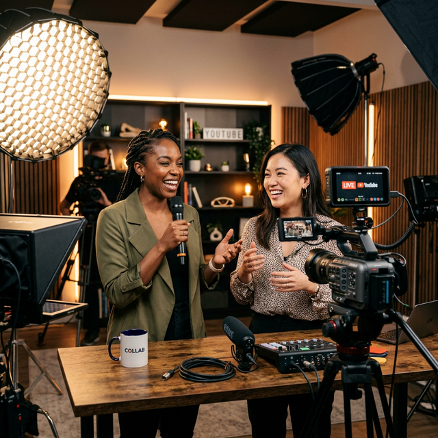

How to Collaborate with Other Creators Effectively

In the solitary world of content creation, it is easy to feel like you are shouting into the void. You spend hours scripting, filming, and editing, only to hope the algorithm favors your latest upload. But there is a proven accelerator that cuts through the noise, bypasses the cold-start problem of new channels, and injects fresh energy into your brand: collaboration.
Collaboration is not just a "growth hack"; it is a fundamental shift in strategy from competing for attention to sharing audiences. When done correctly, a collaboration acts as a powerful trust transfer. When a viewer sees their favorite creator vouching for you, laughing with you, or learning from you, that trust is instantly extended to your channel. It is the fastest way to convert strangers into subscribers.
However, the landscape of creator collaborations has evolved. The days of simple "shout-out for shout-out" exchanges are largely over. Today's audiences demand authenticity, high production value, and genuine chemistry. A forced collaboration can do more harm than good, alienating your core fans and damaging your reputation.
This comprehensive guide will walk you through the entire lifecycle of a successful creator collaboration. From identifying the perfect partner and crafting the pitch, to executing the shoot and maximizing the cross-promotional impact with tools like deep linking, we will cover everything you need to turn a single video into a long-term growth engine.
Phase 1: Strategic Partner Selection
The most common mistake creators make is chasing subscriber counts. They aim for the biggest channel in their niche, sending generic emails that get ignored. Effective collaboration starts with strategic alignment, not just size.
The "Adjacent Niche" Strategy
While collaborating with someone in your exact niche works, collaborating with someone in an adjacent niche often yields better results. Why? Because their audience is similar but not identical. There is less overlap, meaning a higher percentage of their viewers are discovering you for the first time.
- Fitness Creator: Collaborate with a Healthy Cooking channel or a Mental Wellness coach.
- Tech Reviewer: Collaborate with a Productivity Guru or a Setup Aesthetics channel.
- Gaming Channel: Collaborate with a Comedy Sketch artist or a Lore Historian.
Look for creators who share your values and production quality. If you produce cinematic 4K documentaries and they produce shaky, low-effort vlogs, the mismatch will be jarring for both audiences. Your brands should feel like they belong in the same room.
Analyzing Engagement Over Vanity Metrics
Do not be blinded by subscriber counts. A channel with 50,000 highly engaged subscribers is a far better partner than a channel with 500,000 dormant ones. Look at their comment sections. Are people asking questions? Are they tagging friends? Do they seem to trust the creator's recommendations? High engagement indicates a loyal community that is likely to check out your channel if recommended.
Pro Tip: Use tools like SocialBlade or VidIQ to analyze a potential partner's growth trajectory. Avoid channels that are losing subscribers or have erratic view counts, as this may indicate underlying issues with their content or audience trust.
Phase 2: Crafting the Perfect Pitch
Once you have identified your ideal partner, you need to reach out. Most collaboration requests end up in the trash because they are self-serving. Your pitch must answer one question immediately: "What's in it for them?"
The Value-First Approach
Don't start by asking for a favor. Start by offering value. Have you already made a video featuring their content? Did you write a blog post analyzing their strategy? Mention this early in your email. It proves you are a genuine fan, not just a opportunist.
Your pitch should include:
- A Specific Idea: Don't say "Let's collab." Say "I have an idea for a video where we debate X vs. Y, combining your expertise in A with my experience in B."
- Low Friction: Make it easy for them. Offer to handle the editing, come to their studio, or manage the thumbnail design. Reduce the workload on their end.
- Audience Benefit: Clearly explain why their viewers will love watching you. "My audience loves your content, and I know your viewers would enjoy this specific angle because..."
Professionalism Matters
Treat your pitch like a business proposal. Use a clear subject line, keep the email concise, and include links to your best work. If you have a media kit, attach it. Showing that you take your channel seriously signals that you will be a reliable partner.
Phase 3: Conceptualizing the Content
The actual video concept is where the magic happens. A bad concept can waste the opportunity, while a great one can go viral. The goal is to create something that neither of you could make alone.
The "Fish Out of Water" Format
One of the most engaging formats is placing each creator in the other's element. A serious tech reviewer tries to play a chaotic multiplayer game with a gaming streamer. A professional chef tries to cook using only gadgets from a budget tech channel. This dynamic creates natural conflict, humor, and curiosity.
The Deep Dive Debate
For educational channels, a respectful debate or a "joint masterclass" works wonders. Tackle a controversial topic in your niche from two different perspectives. This encourages viewers from both sides to watch the whole video to hear the counter-argument, boosting retention.
The Challenge Video
Challenges are timeless for a reason. They are high-energy and easy to consume. Whether it's a physical challenge, a trivia quiz about each other's channels, or a "blind taste test," these formats rely on personality rather than heavy scripting, making them fun to film and watch.
The "Two-Part" Strategy
Consider splitting the collaboration into two parts: one video on your channel and one on theirs.
Part 1 (Your Channel): Sets up the premise, ends on a cliffhanger.
Part 2 (Their Channel): Resolves the story, offers a unique conclusion.
This forces interested viewers to cross over to the other channel to get the full story, effectively doubling the traffic exchange.
Phase 4: Execution and Production
Once the concept is locked, treat the production with the same rigor as your solo content. Poor audio, bad lighting, or a disorganized shoot can ruin the chemistry.
- Pre-Production Call: Have a video call before filming to run through the outline. This helps break the ice so you aren't meeting for the first time when the cameras roll.
- Respect Their Time: Be punctual. Have your gear ready. Stick to the schedule. Being difficult to work with is the fastest way to ensure you never get a second collaboration.
- Capture B-Roll Together: Film extra footage of you two hanging out, laughing, or setting up. This "behind the scenes" content is gold for social media promotion later.
Phase 5: The Launch and Cross-Promotion
Filming the video is only half the battle. The launch strategy determines how many people actually see it. A coordinated release is essential.
Synchronize Your Release
Agree on a specific date and time to publish. Ideally, release within hours of each other. This creates a "surround sound" effect where the topic is trending in both communities simultaneously.
Leverage Deep Linking for Mobile Users
This is a critical, often overlooked step. When you promote the collaboration on Instagram, TikTok, Twitter, or via email, how you share the link matters.
If a user clicks a standard YouTube link on mobile, it often opens in a web browser. They might be logged out, the interface might be clunky, and they might bounce before the video loads. This kills retention.
Instead, use deep linking tools like OpeninYoutube. These tools ensure that when a fan clicks your promo link on social media, it opens the video directly in the YouTube app.
- Seamless Experience: The user is already logged in and ready to watch.
- Higher Retention: App viewers tend to watch longer than browser viewers.
- Better Algorithm Signal: High retention from external traffic tells YouTube the video is valuable, boosting its organic reach.
When you are driving traffic from a partner's audience, every fraction of a second of load time counts. Remove the friction.
Engage in the Comments
For the first 24 hours, both creators should be active in the comments section of both videos. Reply to questions, pin funny comments, and heart fan messages. This activity signals to the algorithm that the video is sparking conversation, further boosting its visibility.
Phase 6: Maintaining the Relationship
A successful collaboration shouldn't be a one-off event. It is the start of a professional relationship.
- Share Analytics: Be transparent. Share how the video performed for you. If it brought them a lot of subs, let them know. This builds trust for future projects.
- Continue the Interaction: Keep commenting on their new videos after the collab hype dies down. Introduce them to other creators in your network.
- Plan the Sequel: If the first video was a hit, start brainstorming "Part 2" or a new angle immediately while the momentum is hot.
Warning: Avoid "Collab for Collab" scams. Some creators will agree to collaborate just to get access to your email list or to promote a shady product. Always vet your partners thoroughly. Your reputation is tied to theirs.
Common Pitfalls to Avoid
- Lack of Clear Agreement: Discuss ownership, editing rights, and thumbnail approval beforehand. Ambiguity leads to conflict.
- Overwhelming the Audience: Don't make the collab feel like a blatant ad. Keep the focus on entertainment and value.
- Neglecting Your Own Brand: While you want to fit in with their style, don't lose your own voice. Your unique perspective is why they wanted to work with you in the first place.
Conclusion: The Compound Effect of Community
Collaborating with other creators is one of the highest-leverage activities you can undertake. It accelerates growth, diversifies your content, and connects you with peers who understand the unique challenges of the creator economy. But beyond the metrics and the subscriber counts, it fosters a sense of community. It reminds your audience—and yourself—that creation is not a solitary pursuit.
By strategically selecting partners, crafting compelling concepts, and using technology like deep linking to maximize every click, you can turn a simple video project into a pivotal moment for your channel. So, stop waiting for the algorithm to save you. Reach out, build bridges, and create something extraordinary together.
Who is your dream collaborator? Start drafting that pitch today.
Maximize Your Collab Reach
Sharing a collab across socials? Ensure your fans open it in their YouTube app for the best experience.
Start Using OpeninYoutube